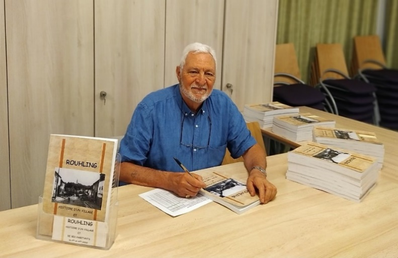
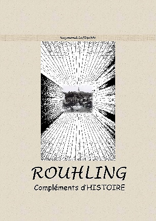
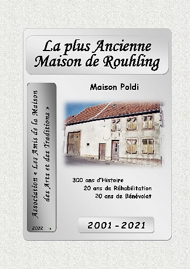
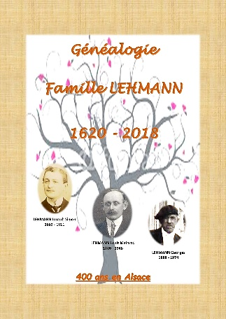
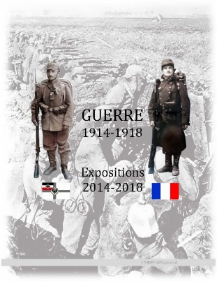
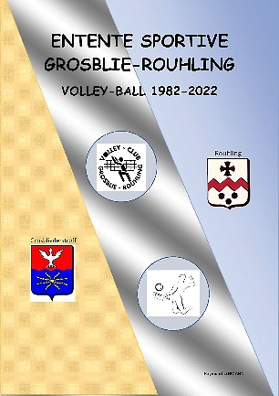

Une Passion LR-mise à jour 2025
Une Passion…Patrimoine et Histoire locale, Généalogie …
(Raymond LEHMANN raconte sa passion)
Pour donner suite à la relance du charbon après la guerre 1939/1945, les Charbonnages de France ont eu besoin de mineurs pour extraire le charbon en Lorraine. Mon père a répondu à l’appel en venant s’installer à la cité de Rouhling, spécialement construite en 1955, pour accueillir ces mineurs.
Donc, je suis arrivé le 04 juillet 1955 à Rouhling, à l’âge de 4 ans. Mon père d’origine alsacienne n’a pas rencontréde difficulté à s’intégrer à la vie associative et communale, ni pour s’adapter à la langue. Ce qui n’a pas été le cas de ma mère, native du Jura. Résidant encore aujourd’hui à Rouhling, je peux dire que j’ai vécu toutes les étapes de ma vie dans le même village.

Les deux livres que j’ai élaboré sur « l’histoire du village de Rouhling et de ses habitants » est le fruit de ma passion pour l’histoire locale et pour l’histoire en général.
L’objectif est également de laisser une trace accessible à tous, des souvenances de Joseph WACK et Antoine SPOHR, deux personnes qui ont retracé à leur façon la vie des habitants du village.
A mon tour de mettre modestement et à ma façon, une pierre à l’édifice de la mémoire locale pour leur rendre hommage.
Cet intérêt pour l’histoire locale a pu germer inconsciemment quand j’ai mis un pied dans la vie associative en 1983.Cela s’estdéveloppé, en prenant des responsabilités au sein de la municipalité pendant 25 ans (1989-2014) et en participant activement dans le monde associatif en tant que président de cinq associations culturelle et sportive, pendant plus de 40 ans.

Cela a vraisemblablementparticipé à l’éveil de ma curiositépour l’histoire de la commune.
En 1989, ma participation à la commission du bulletin municipal a été également un vecteur, en côtoyant Joseph WACK et Antoine SPOHR, témoins actifs de la vie communale pendant de nombreuses décennies.
Mais je pense que le déclencheur fut en 2001 quand M. le maire, Jean KARMANN, m’a confié en tant qu’adjoint, la responsabilité du bulletin municipal et le projet de restauration de la maison des arts et des traditions (musée local).
A partir de ce moment-là, j’ai rencontré plus souvent et coopéré plus étroitement avec Joseph et Antoine, ce qui m’a amené à approfondir mes connaissances historiques quim’a conduitàeffectuer des recherches sur l’histoire nationale.

C’est à partir de2002, en effectuant des recherches d’actes paroissiauxavec Josephque j’ai véritablement découvert la généalogie, qui est considérée comme une .
Puis en 2008,l’association « Les Amis de la Maison des Arts et desTraditions » a édité la brochure « 300 ans d’histoire » de lamaison lorraine.
Ayant collaboré à ce livret avec Joseph, cela m’a plongé un peu plus dans l’histoire locale et régionale. Pendant cette période, je me suis beaucoup investi dans les recherches historiques et généalogiques, avec les précieux conseils de Joseph.
Ensuite, jusqu’en 2021, j’ai élaboré et édité, quatre autres brochures pour décrire l’évolution de la restauration de la maison lorraine par les bénévoles.
En 2022, pour les 20 ans de l’Amat, j’ai élaboré et édité un livre, retraçant les 300 ans d’histoire de la maisonet de ses habitants, les 20 ans de travaux de restauration et d’aménagements de la maison lorraine, ainsi que la vie de l’association, dont je suis le fondateur et fut président pendant 13 ans.
En 2023, un autre livre a été édité, auquel j’ai rajouté l’année 2022 qui clôturait l’achèvement des travaux.
Maison Lorraine :
Ayant pris goût à la généalogie, en 2010, je me suis attelé à la recherche de mes ancêtres du côté paternel et maternelle.
C’est au mois de mai 2016 que j’ai organisé une cousinade dans le Jura et édité un livre sur la famille du côté maternel et en 2020 du côté paternel.
Toutes ces recherches généalogiques m’ont amené à découvrir mes ancêtres, qui pour certains avaient participé aux deux guerres mondiales et en particulier à celle de 1914-1918.
Une chose en entrainant une autre et à l’occasion du centenaire du conflit1914-1918, je me suis attelé à la création de quatre expositions et d’un livre sur les principales étapes de cette guerre, mais également sur la vie de la population pendant cette période, dans le monde et dans nos villages mosellans.
Le livre sur « la Guerre 1914-1918 » est le reflet de quatre expositionsentre 2014 et 2018. Son contenu se décline en trois parties :
-La première vous propose un résumé des principales étapes de cette guerre et de situations particulières.

-Dans la deuxième partie vous retrouverez l’ambiance de cette guerre à travers des cartes postales de l’époque d’un correspondant local.
- La troisième partie est consacrée aux premiers moments qu’ont vécu certains villages proches de la frontière et au retour à la France en 1918.
Cette présentation n’a pas la prétention d’être un ouvrage historique, malgré les documents présentés ou les textes s’y référant.
Ce fut un moyen de maintenir le souvenir des soldats Alsacien/Lorrain, pourque cette période de l’histoire reste gravée dans la mémoire collective et locale.
De 2013 à 2019, j’étais vice-président d’une association de généalogie et prodiguais des cours d’initiations à la généalogie, ainsi que des formations à l’utilisation de logiciel généalogique. Ne faisant plus partie de l’association,je continue à aider les personnes qui le souhaite.
Comme les recherches et les découvertes me passionnent et font parties de mon quotidien, j’apporte également depuis quelques années, mon aide aux demandes qui me sont adressées,soit par internet, soit celles quela mairieme fait parvenir.
En 2024 - Souvenirs d’une autre expérience.


Vingt ans après avoir cédé mon poste de président du club de Volley-Ball de l’ESGR, je me suis aperçu, que certaines générations de jeunes filles et jeunes garçons que je côtoyais régulièrement, avaient gardées de beaux souvenirs de cette aventure.
C’est pourquoi j’ai eu l’envie, avec un peu de nostalgie, de résumerdans un livre les principaux faits marquants de cette aventure que nous avons vécu entre 1982 et 2022. Quarante années d’une épopée sportive, conviviale, amicale et qui a fini quelques fois par des mariages.
Il faut savoir que le paysage sportif local des communes de Grosbliederstroff et de Rouhling, a également vécu cet engouement pour le Volley-Ball.
Cet ouvrage a été édité en 2024 et lors d’une rencontre festive a été offertaux joueurs, aux joueuses, aux divers présidents, aux sponsors et partenairesqui ont marqués l’histoire du club de « l’Entente Sportive Grosblie-Rouhling » (ESGR).
Nota
Vous pouvez retrouver et consulter à la bibliothèque de Rouhling, les cinq livres nommés ci-dessous:
- l’Histoire de Rouhling et de ses Habitants
- Rouhling – Compléments d’Histoire

-La Guerre 1914-1918 – Expositions 2014-2018
- Les 300 ans de la Maison la plus Ancienne de Rouhling etles 20 ans de travaux de restauration
- L’Entente Sportive Grosblie-Rouhling – Volley-Ball 1982-2022
Remarques
- Si vous souhaitez acquérir les deux livres sur l’histoire de Rouhling, ainsi que celui de la Guerre 1914/1918, *vous pourrez les trouver sur le site : *
- Le livre de l’association « Les Amis de la Maison des Arts et des Traditions », est en vente lors des Portes-ouvertes de la maison, ouauprès du président de l’association.
- Pour le livre de« L’Entente Sportive Grosblie-Rouhling – Volley-Ball1982-2022 », comme il a été offert gracieusement,l’édition a été limitéeaux membres et partenaires du club.
